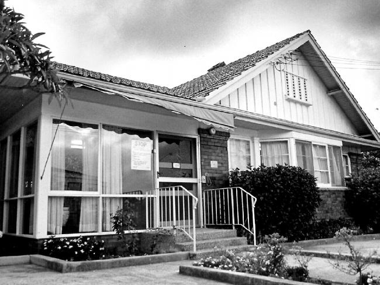
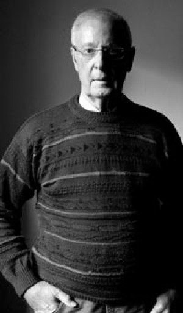

Literature Review
An assessment of several cases involving the Chelmsford patients, the nurses and the reaction the public had when it was revealed what had happened at Chelmsford Hospital
The Chelmsford hospital scandal occurred during the 1960's and 1970's in a small hospital in New South Wales. Patients admitted for treatment were subjected to treatments of deep sleep therapy (DST) and electric shock therapy (ECT) against their will. This carried on for over a decade, with more than 3000 patients inhumanely treated whist under the guard of Dr Harry Bailey (Perry, 1990). The process of DST involved placing patients in a sleep like coma for up to 2 weeks, in this time doctors administered ECT directly to the patient's brains (Pols, 2013). Many of these patients fell ill while at the hospital, some as a direct result of the treatment and unhygienic conditions. Often patients were subjected to conditions in which they were forced to lay in their own urine for hours at a time (Geason, 2007). With illness' such as pneumonia, dehydration, bed sores and vomiting (Pols, 2013). In addition many of these procedures were occurring whilst patients were under anesthesia, often without consent (Pols, 2013).
Interestingly many of the patients who received these treatments were not admitted on the grounds of psychiatric instability, but rather self admitted alcoholics or addicts attempting to rid themselves of addition (Perry, 1990). As a result of the severity of the treatment many patients died or committed suicide at the hospital or after discharge (Perry, 1990; What Is Scientology, 2015). With many other patients obtaining severe brain damage (Perry, 1990), unfortunately a large number of the deaths that occurred at Chelmsford were covered up using the excuse that files were lost (Perry, 1990).
One victim of the horrific treatments that occurred at Chelmsford was Barry Hart, a former model and actor who entered the hospital to seek assistance for depression in 1973 (Walters, 2009). Hart underwent unconsented DST in conjunction with large doses of barbiturates and ECT over the period of 3 weeks (Walters, 2009). The outcome of this was the development of post-traumatic stress disorder (PTSD), pneumonia, pleurisy and a pulmonary embolism as a result of the PTSD, thus leaving him unemployable (Walters, 2009). In 1980 Hart took legal action against the Chelmsford doctor, John Herron in which we was awarded a $60,000 payout for his ordeal (Walters, 2009).
Eventually the horrors of the Chelmsford scandal were uncovered by Rosa Nicholson who obtained a job in the hospital, after the death of one of her friends (Perry, 1990). She obtained adequate information to generate a royal commission against Bailey and his staff (Perry, 1990; Pols, 2013). Evidence exposed the ECT and DST that occurred, that Bailey regularly has sexual intercourse with female patients and in addition the evidence exposed his involvement in the suicide of a patient in which he was the sole beneficiary of their will (Perry, 1990). However before the commencement of the Royal Commission, Bailey himself committed suicide (Perry, 1990). The scandal was initiated and fueled by Bailey, however if the health care system wasn't flawed on many levels, or if mental health treatments were regulated the scandal wouldn't have proceeded for as long (Geason, 2007).
Many people believe that the best thing to come from the Chelmsford scandal was the reformation of the health sector (Carney, 2013), however contrasting opinions are that nothing good could have come from the tragedy (Carney, 2013), . The general public felt shocked when news of the scandal surfaced (What Is Scientology, 2015). Many individuals called the acts 'barbaric' and were left feeling uncomfortable and disheartened by the lack of government action (What Is Scientology, 2015). Whilst the Chelmsford scandal was a disgusting example of unethical psychiatric experiments unfortunately there have been multiple instances of similar treatments (What Is Scientology, 2015).
However other opinions of Bailey attempt to explain his perceptive that these experiments were not hideously grotesque and ridiculous. That he truly believed the experiments undertaken had the potential to help treat certain disorders (Lambert, Wee Teo, Shang, Hamre & Bismire, 2014). At this stage, there was no evidence explaining the adverse affects of electroconvulsive therapy, it is believed that Bailey himself was a well-educated psychiatrist with the intentions of helping aid psychiatric patients whom may have been slightly misguided early on in his career (Lambert, Wee Teo, Shang, Hamre & Bismire, 2014).